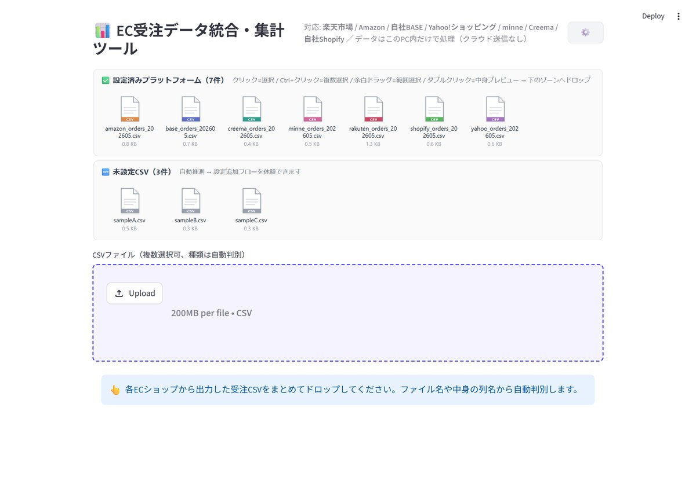

複数ECの受注CSV（楽天・Amazon・自社BASE 等）を、
ドラッグ&ドロップで統合・集計・グラフ化して、Excel で出力。
月末の集計作業「2時間 → 数秒」を実現します。
下記のような場面を想像して制作しました。
※ ペルソナ（田中さん）やサンプルデータは、ポートフォリオ用に想定した架空のものです。ツールそのものは実際に動作します。
下のプレビューをクリックすると、別タブでデモが開きます。
（初回はサーバー起動のため 30秒〜1分ほどかかります。PC での閲覧がおすすめです）
